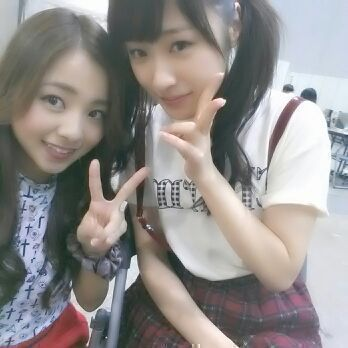
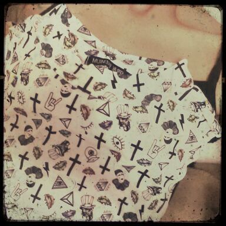

皆さん\(*^^*)/
今日もお元気してますかあ？
まにまにだお。
カズカズとッ ♪

カズカズ♪って何かヤダ(*^^*)あは
かにかに ズニズニ かにかに。
ずっと黒髪だった かずみん♪は
最近 髪色を明るくしました。
その結果、、
なんだか いい感じにイメチェン
できてるぢゃ〜ん \(〃ω〃)/笑
な〜んつってねん♪
写真じゃ伝わりにくいけど。
まぁそぅだね。
結果 何色でも可愛いんです。
それでそれで 今日は
東京ビッグサイトにて
個別握手会がありましたあああ(*´ω｀*)
今日の 私服ねっ
スタッフさんにも メンバーにも
皆さんからも 好評でうれちかったよ〜ん
*首つまりトップス
*赤のハイウエストパンツ
上のトップスが
可愛いんだよぉ〜＼(^^)／
見てぇ〜
近くで見ても何の柄なんか
よく分かんなぁ〜ぃ♪
あっ、 鎖骨が ．．．笑っ。

ドクロと お目めと
指に十字架と 人に...
ん〜またお目め？
目玉親父みたいなのもいる。
も〜 でもこの不思議な感じが
可愛い。 ろってぃ-は、そう、思う、よ。
今日はいい天気で本当よかった(*^^*)
皆も 気温の変化とかには
気をつけてねん．
今日も、握手会に来てくださった皆さん
本当に ありがとうございました＼(^o^)／
皆に会えて キモチもすっきり ) ) )
パワーもらっちゃったよ♪うししっ
ありがとーっ。
皆 大好きだーっ。(´з`)-☆
あっ、 そうだそうだ
昨日から配信されました☆
『乃木坂ってここ』
メンバーの青森に行った時の様子
リハーサル中やご飯タイムを
映しているので、
是非 見てくださぁ〜い＼(^o^)／
あと、その後は
私 と あにあに と ちはるの
何も飾らない 素過ぎる
普段通りのトークなので
よろちくお願いします。♪
(動画ページ)
http://www.nogizaka46.com/smph/video/
とにかく 楽しかったよ。
ではではっ、
そろそろ おやすみなさいタイムかな？
代々木に向けての
リハーサル始まるぞぉ〜 )))
頑張〜？ ロッティー(ω)
のし。